Prepare the Panther Instrument
|
|
IMPORTANT! Read before continuing! Existing Panther Installation: For an existing Panther being upgraded to a Panther Fusion, start with the Remove the Doors and Canopy section below. New Panther Installation: For new Panther installations, begin with the Remove the Panther Covers and Trim section. |
 Remove the Doors and Canopy
Remove the Doors and Canopy
-
Ensure that the Panther System is powered down. Remove the power plug from the Panther System.
Note—Save ALL screws and parts removed from the Panther System during this procedure unless noted otherwise. They will be used later when installing the Fusion. - Remove the left-side Panther System door by lifting the door off of its three hinges.
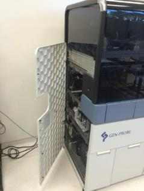
- Remove the left-side Panther front panel cover by pulling it firmly away from the left side of the Panther System.
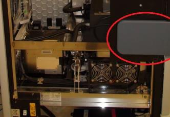
- Remove the screws that secure the front and rear Panther canopy covers to the Panther. Remove these covers.
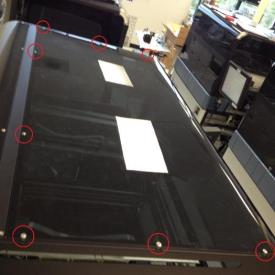
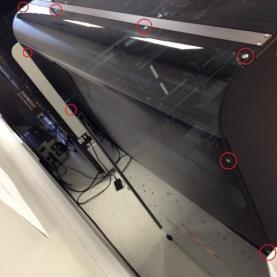
- Using a 3mm hex driver, remove the screws securing the Panther canopy mounting support bar, and remove the bar.
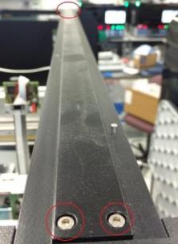
- Raise the Panther front canopy doors and, using a 2mm hex driver, remove the screws from the clear pipettor shield. Remove the pipettor shield.
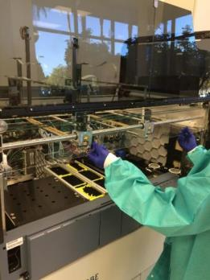
- Using a flat-head screwdriver, remove the screws securing the Panther front canopy door shocks. Remove both door shocks.
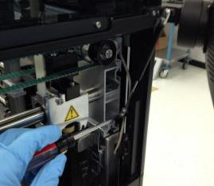
- Using a 3mm hex driver, remove the screws securing the Panther front canopy doors. Remove the front canopy doors.
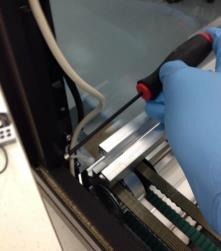
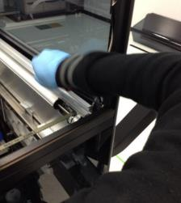
- Disconnect and remove the cable from the left-side canopy status LED PCB and the cable interconnect to the front cover PCB.
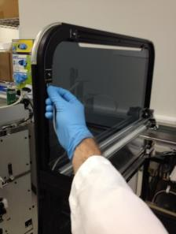
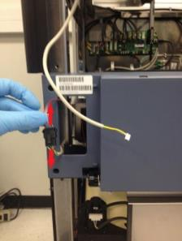
Remove the Panther Covers and Trim
- Using a 3mm hex driver, remove the screw securing the rear white trim piece. Remove the rear, bottom, and corner white trim pieces.
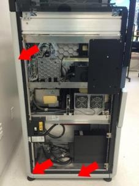
- Using a 3mm hex driver, remove the screws securing the front and rear black trim of the Panther left-side canopy cover.
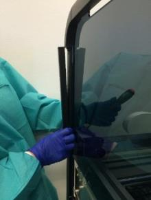
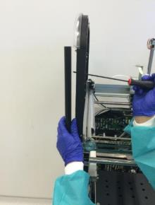
- Using a 3mm hex driver, remove the screws securing the Panther left-side canopy cover. Lift up and away from the system to remove the Panther left-side canopy cover.
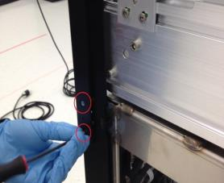
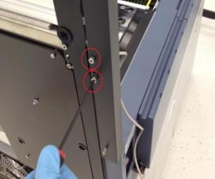
- Remove the screws that secure the Panther left-side front panel cover mounting trim to the Panther System. Remove the front panel cover mounting trim.
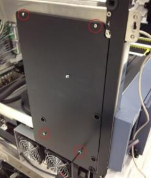
- Remove the screws securing the Panther lower left-side trim mounting piece. Remove the trim mounting piece.
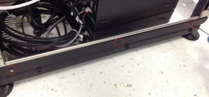
- Remove all screws securing the rear left-side mounting trim. Remove the mounting trim. Save for later use on the Fusion side.
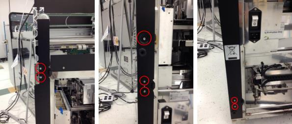
- Remove the screw securing each of the three door hinges. Remove the door hinges. Save for use on the Fusion left side.
Note—Some systems will have different hinges from what is shown here; the procedure is unchanged. 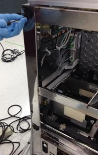
- Using 2.5mm and 3mm hex drivers, remove the screws securing the left-side front black trim. Remove the Panther front left-side mounting trim. Save for use on the Fusion left side.
Note—There may be washers behind one of the screws. 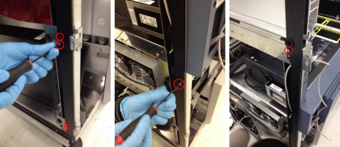
- Remove the screws securing the Panther left-side canopy cover mounting plate. Remove the left-side canopy cover mounting plate. Save for use on the Fusion left side.
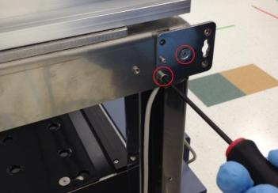
- Using a 3mm hex driver, remove the screws securing the Panther power switch face plate. Remove the power switch face plate and save for later re-installation (this will be installed on the Fusion).

- Using a 2.5mm hex driver, remove the screws securing the workstation door hinges. Remove the workstation door along with its hinges.
Note—The workstation door, screws, and hinges do not need to be saved. They will not be used in this procedure. 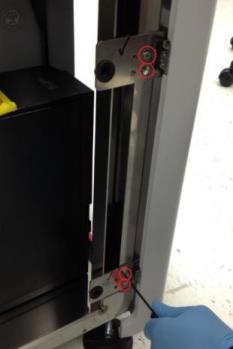
Install the Panther Fusion Workstation Cable Routing Shroud
- Remove the screws securing the service queue. Remove the service queue. (Do not save.)
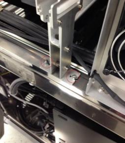
- Remove the screw that holds the workstation bay cable routing clip to the Panther frame just above the Panther workstation bay.
Note—On some Panther Systems this screw may not be present. If this is the case, skip to the next step. 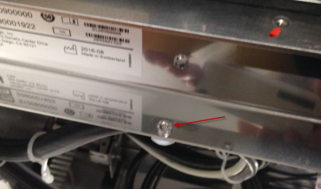
- Mount the Panther Fusion workstation cable routing shroud onto the Panther just above the workstation bay, using only one screw located near the front of the system.
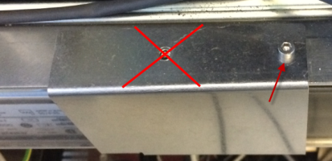
- Using the screw removed earlier, secure the cable routing clip to the underside of the Panther Fusion cable routing shroud.
Note—On some older Panther Systems there may not be a threaded screw-hole for the screw shown in the following figure. In this instance skip this step. Ensure that cable routing in the workstation bay is not affected negatively. Use the cable clamps included in the Panther Fusion upgrade screw kit. 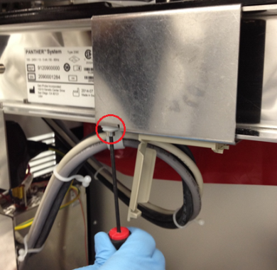
Install the Reagent Bay Cooling Line Extension and Elution Buffer Transfer Arm Shroud
- Disconnect the cooling line (quick-connect fitting, push in, rotate counter-clockwise and pull out) from the rear of the Reagent Bay module.
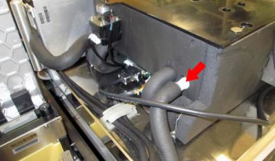
- Remove the screws securing the cable routing bracket behind the Reagent Bay. Pry the bracket off of its adhesive base and remove it from the system.
Note—This bracket will not be used again. It can be discarded or saved for future Panther service. The 2.5mm screws should still be saved. 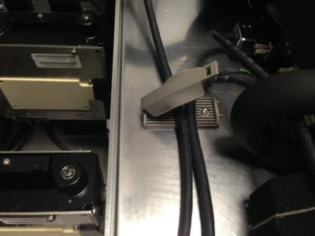
- Remove (unscrew) the male CPC connector on the rear of the Reagent Bay. Place an absorbent towel under the connector during removal to prevent any liquid spillage. Ensure that the white rubber O-ring from this fitting is saved.

Caution—This CPC connector usually takes some force to unscrew. It may be necessary to use pliers or vise grips to loosen the connector. If it breaks, a tap can be used to remove it. 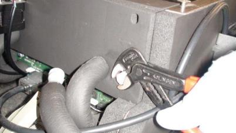
Caution—The cooling line extension tubing included in the Fusion upgrade kit may have an inner diameter that is too large (6mm inner diameter). This can lead to an increased chance of tube failure at the barbed fitting interconnect and cause cooling water leaks into the PC Bay. The correct size cooling fluid tubing will have a 5mm inner diameter. - Unclip the threaded female CPC connector from the Panther Fusion cooling line upgrade fluid line and place the rubber O-ring from the removed Panther fitting onto the Panther Fusion female fitting as shown in the following figure.
Note—If this O-ring is damaged or missing then ignore it. 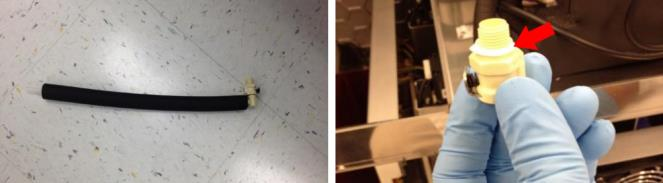
- Screw the Fusion upgrade female CPC connector onto the rear of the Reagent Bay. Carefully hand tighten the female CPC fitting into the Reagent Bay.
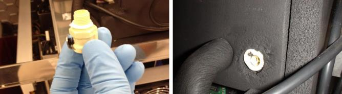
- Cut (scissors or utility knife) the cooling line tubing just behind the Panther barbed female CPC connector. Remove the old Panther barbed female CPC connector from the cooling line.
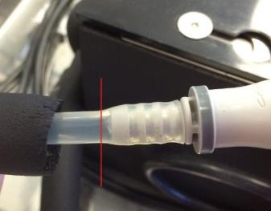
- Connect the barbed fitting of the new Fusion Reagent Bay cooling line adapter to the cooling line.
Note—Cooling line insulation and extra cooling line may be cut to facilitate tubing connection and fit in the system. 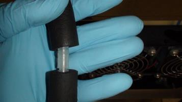
- Connect the male and female CPC fittings of the Panther Fusion cooling line upgrade. Route the CAN cables and barcode scanner cable as shown in the following figures.
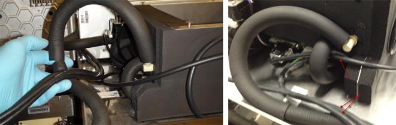
- Remove the screw and clamp that holds the Reagent Bay cooling line to the left side of the Panther chassis.
Note—This screw will not be used in this procedure. It can be discarded or saved for future service use. 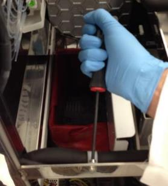
- Place the Elution Buffer Transfer Arm shroud into the Panther. Ensure that the Reagent Bay liquid cooling line fits between the new shroud and the back of the metal frame as in the following picture.
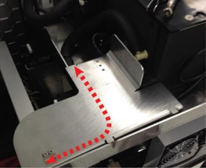
Caution—Some Panther Systems may not have a hole big enough to route the CAN cables along with the cooling line under the shroud. The CAN cables may have to be routed separately, still under the shroud but alongside the metal shelf. Use zip ties if necessary, and ensure the cables do not interfere with the Mid Bay Drawer opening or closing or with pipettor or Linear Distributor movement. - Using a 4mm hex driver, reattach the reagent bay cooling line routing clip with the 4mm screw provided in the Fusion upgrade screw kit.
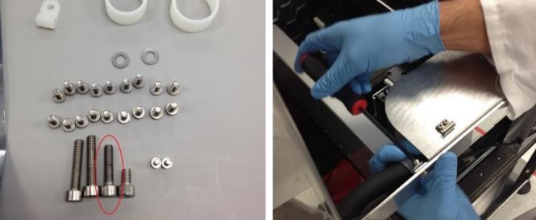
- Using a 2.5mm hex driver, attach the Elution Buffer Arm landing shroud to the Panther with the screws from the removed cable routing clip. If these screws are too small, use screws from the Fusion upgrade kit.
Note—The routing clip will not be used in this procedure. It can be discarded or saved for future service use. 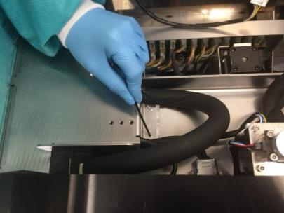
Install the Service Drawer Ball Detent Lock and Service Drawer Cover
- Unlatch the left and right Panther service drawer latches. Open the Panther service drawer.
IMPORTANT: Unscrew the Luminometer injector before opening the Panther service drawer to prevent damage to the injector when opening the drawer.
- Remove the screws securing the left service drawer latch to the Panther. Remove the service drawer latch.
Note—These screws, washers, and latch lock will NOT be used later in this procedure; they can be discarded or saved for future service use. 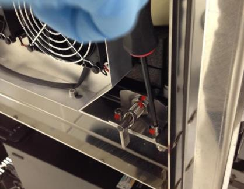
- Using a 4mm hex driver and the 2 long (4mm) screws and two washers from the Fusion upgrade kit, install the Panther Fusion service drawer ball detent drawer lock. Ensure that the top set screw is loose and that the two mounting screws are loose to allow play in the location of the lock. Manually rotate the ball detent counterclockwise so that it does not interfere with the service drawer movement.
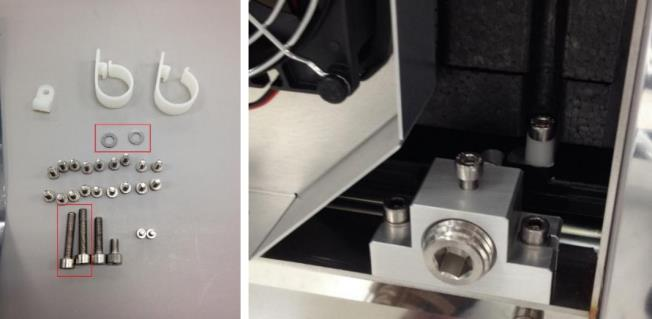
- Using a 2.5mm hex driver, remove the screws securing the two COP cable routing clamps to the left side of the Panther service drawer. Remove these cable clamps but save the screws.
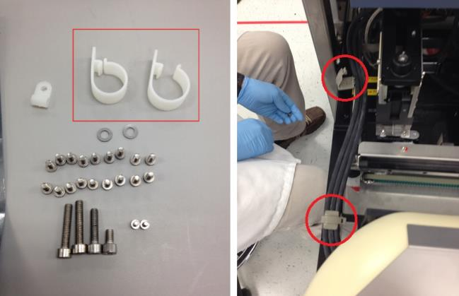
Note—These cable clamps will NOT be used later in this procedure; they can be discarded or saved for future service use. - Using a 3mm hex driver and the screws previously removed from the COP cable clamps, secure the cable clamps included in the Panther Fusion upgrade kit to the left side of the Panther service drawer. Route the Panther Incubator COP cables through these clamps.
Note—Ensure the cables are routed in parallel to the frame of the Panther, and clamps are perpendicular when tightened down to prevent interference when closing/opening the service drawer. 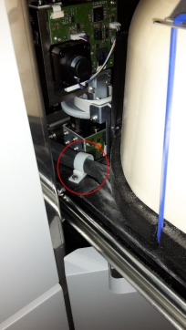
- Close the service drawer and lock the right service drawer latch.
- Extend the ball detent into the service drawer hole, moving the lock toward the front/rear of the system as necessary. This ensures that the lock is centered on the service drawer hole. Secure the mounting screws to secure the lock to the system.
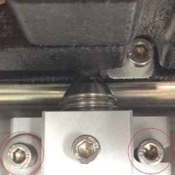
- Adjust the ball detent depth to a position such that the service drawer locks in place when pushed in, but not far enough as to prevent future service drawer opening. See the following figure.
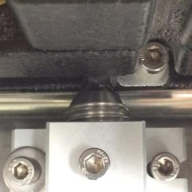
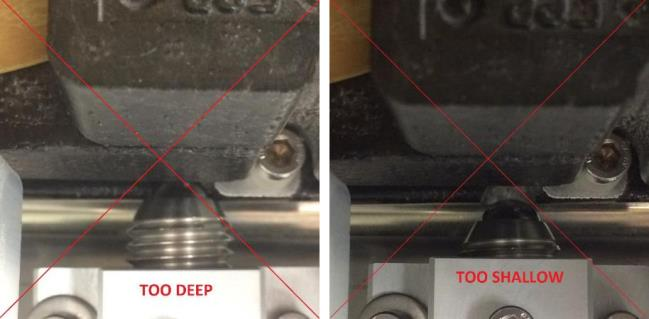
- Unlock the right Panther service drawer latch and confirm that the service drawer can be opened, closed, and locked successfully. Repeat the previous step if there are issues with service drawer movement.
- Close and lock the right side of the service drawer and use a 3mm hex driver to ensure that the detent set screw is secured.
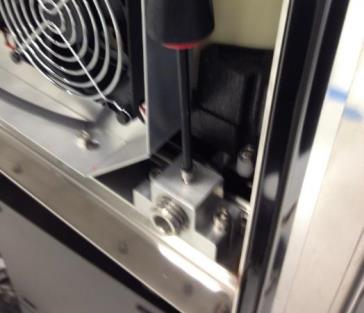
- Using a long 4mm hex driver, loosen the screws securing the Panther service drawer cover. Remove the service drawer cover.
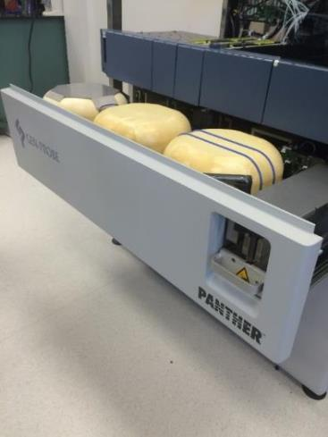
- Place the Fusion Service Drawer cover removed from the marketing crate onto the Panther Service Drawer in place of the Panther Service Drawer cover. Tighten the screws that secure the Service Drawer cover.
Note—The Panther Service Drawer cover will not be used again in this procedure. It can be discarded. 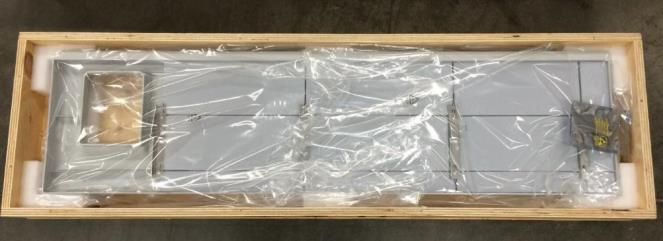
Install the Panther Fusion 21-Position TCR Mixer and Slim-line Sample Bay Scanner Upgrade
- Remove the 8-Position TCR Target capture reagent—An assay-specific reagent added as part of specimen pipetting. Carousel.
- Using a 3mm hex driver, remove the screws that secure the Mag Wash bottle holder to the chassis and remove.
- Unscrew the 3 hex screws with a 3mm hex key that secure the MagWash bottle holder to the chassis.

- Remove the MagWash bottle holder from the Panther and place on an absorbent bench pad.
- Unscrew and remove the bubble level from the Panther System and place on an absorbent bench pad.
- Use vise grips if you cannot unscrew the bubble level by hand.

- Use vise grips if you cannot unscrew the bubble level by hand.
- Disconnect the barcode scanner cable from the back of the Sample Bay module.

- Remove (and save) the 5 hex screws, using a 3 mm hex wrench, securing the barcode scanner to the side of the Sample Bay and mounting bracket.

- Place the barcode scanner on your prepared clean work surface.
- Remove the foam spacer from the metal standoffs.

- Use an adjustable wrench to unscrew and remove ALL standoffs that secured the old scanner to the Sample Bay.
Some instruments have a 5th tiny standoff hidden in the foam.
Ensure ALL standoffs are removed.
- Unscrew the Philips-head screw that secured the old scanner mounting bracket to the Front Cover and remove the bracket.

NOTE—The old Panther Sample Bay barcode scanner, front cover bracket, standoffs, foam spacer, MagWash bottle holder, and bubble level will not be used again and can be discarded or saved for future Panther service. - Remove any remaining wire clips
- Clean all metal surfaces previously covered by the old TCR mixer, Scanner, and MagWash Bottle Holder using 70% ethanol.
- Take the new Slim-line Scanner out of the box.
- Remove the 4 hex screws securing the 4 standoffs to the scanner with a 2.5 mm hex wrench.

- Install the 4 standoffs for the new Slim-line Scanner with an adjustable wrench. The short standoffs are installed in the front and the longer standoffs in the back.
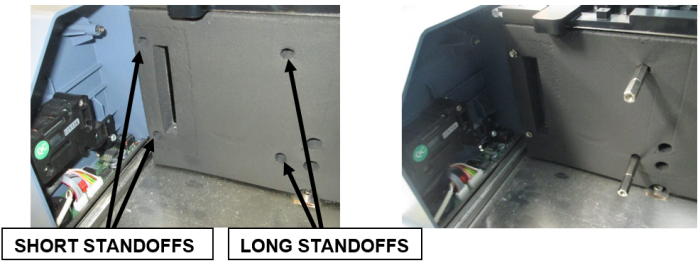
- Secure the new Slim-line Scanner onto the metal standoffs with the 4 standoff hex screws (2.5mm hex key) previously removed in Step 14.

- Secure the bracket with grounding brush to the Front Cover with the Phillips-head screw removed in Step 11.

- Plug the Slim-line Scanner into the back of the Sample Bay module.

- Route the Slim-line Scanner cable in such a way that it does not interfere with the new TCR carousel or pipettor movement. (See image below)

- Remove the two cable clamps on the right side.
Arrange the USB Hub and Front Cover cables neatly in the corner of the L-bracket to the right of the carousel’s installation position so they will all run under the lip of the new carousel assembly when set into place, and prevent the wires from binding or being pinched.
- Locate the guide pins before setting the new TCR carousel into the system.
- Set the new 21-Position Carousel assembly into place.
- Secure the new 21-Position Carousel into place with 3 x 4mm screws and 1 x 3mm screw.

- Plug the CAN cable coming from the COP into the new TCR Carousel.
- Verify/check all cables are clear of moving parts and sharp edges, and are not pinched or experiencing excessive tension.
Fusion Lysis Hardware Installation
- Shutdown the System and PC.
- Remove the Panther Sample Dispense Slot.
Save the screws to install the new module. - Remove the Panther Chiller.
Save the screws to install the new module. - Remove the existing Chiller cooling fan from underneath the Mid Bay drawer.
- Take the rubber mounting sleeve off the old fan and install it on the new fan from the kit.
Ensure the rubber sleeve is installed on the same side as the green/white label for proper air flow.Note— The new fan has a longer cable. - Install the new fan from underneath the drawer (ensure the fan cable is on the left side).
Route the cable between the fan chassis and the Sample Dispense mounting posts.
Slide the rubber stop (if present) into the bracket
- Secure the MRSA Chiller to the drawer using the four 3mm screws.
Ensure the grounding strap is secured to the left, rear screw.
Caution— Ensure the condensation tube is correctly routed into the chassis output shroud behind the MRSA Chiller. 
- Plug the Chiller COP cable into the MRSA Chiller PCB.
Note—The cable routing must be modified. The COP cable will not fit in between the new chiller and the new sample dispense module. Route the COP cable from the back, up and over the chiller. - Plug the replacement fan cable into the PCB and ensure neither cable interferes with any service drawer movement

- Secure the new MRSA Sample Dispense Slot to the drawer using three 4mm screws.
Note—Re-use the two screws from the old module and use one new screw. The screw on the right mounts the Dispense Slot through the MRSA Chiller. 
- Ensure the COP and fan cables behind the chiller do not interfere with any service drawer movement.
Caution—Equipment damage can occur if these cables interfere with the closing of the Service Drawer.
Install the Fusion Trim
- Place the front Panther Fusion mounting bracket onto the Panther.
Secure the bracket with 8x low profile M3x8 SHCSs from the Panther Fusion upgrade screw kit. - Clip the Panther Fusion workstation door onto the hinges present on the front Panther Fusion mounting bracket.
- Place the rear Panther Fusion mounting bracket onto the Panther.
Secure the bracket with 6 x low profile M3x8 SHCSs from the Panther Fusion upgrade screw kit.
Install the PC Bay Cooling Fan Kit
- The required Cooling Fan Kit will be shipped to an installation site from Hologic.
Follow the Cooling Fan Kit Installation procedure to install the cooling fan.
Route the Panther Workstation Cables
- Unplug all the workstation cables.
- Pull the PC out of the Panther and sit it on the floor in front of the system. If possible, try to allow enough slack in the cables for future service.
- Route the cables that will not be connected to the Panther Fusion (Ethernet, PC power cable) out through the cable clips on the rear Fusion dowel mounting bracket.
- Clamp in the workstation cables as shown in the following figure.
- Plug in all the workstation cables and set the PC back into the bay. (The 5/12V power cable for the monitor and USB panel is probably not long enough to be plugged in until the PC is set back into the PC Bay.)
Fusion to Panther Alignment
- Ensure that the Panther System is leveled using a level. Raise or lower the Panther feet accordingly to accommodate.
- Once the Panther System has been leveled on all four sides, make sure that the three centering pins on the right side of the Fusion are loose before starting alignment.
- Ensure that all four Fusion clamps are flipped inside the Fusion. Otherwise, they will interfere with system mounting movement. Tape the clamps in place if necessary.
- Carefully roll the Fusion into the Panther System. Make sure that the Handoff Station and the Elution Buffer arm do not come into contact with the Panther frame during this movement. Raise the Fusion wheels if needed to avoid collision.
Note—Take extreme care with the encoder of the handoff station as it is in close proximity to the mounting screws. - Ensure that the Fusion mounting pins insert into the corresponding mounting holes on the Panther System.
- Align the Fusion front right corner to the left front Panther corner until both pipettor Gantries are at the same level.
- Align the left corner of the Fusion to the right corner so that the front side is level.
- Align the right side of the Fusion to be level by adjusting the right rear foot.
- Adjust the left side of the Fusion to be level by adjusting the left rear foot.
- Verify the rear side is level, adjust as necessary.
- Using a straight edge, make sure that the Fusion and the Panther front sections are even.
- If needed, push back or pull forward to make the Fusion and Panther front sections even.
- After the Fusion has been inserted onto the Panther System and has been properly leveled, clamp all four Fusion clamps onto the Panther clips.

- Adjust the four Panther Fusion clamp nut fasteners until the bumpers between the two modules are slightly compressed.
- Tighten the three 13mm fastening nuts to secure the Fusion mounting pins.
- Unclamp the Fusion and roll it away from the Panther System.
Install the System Covers and Trim
- Place the Panther Fusion left-side Panther canopy cover onto the Panther using the front mounting dowel pin and the rear mounting screw on the cover. Secure the cover with four 3mm thin SHCSs from the Panther Fusion upgrade screw kit.

- Route the Panther Fusion left-side Panther canopy door open/close sensor cable through the frame of the Panther.

- Route the Panther front cover PCB ribbon cable through the frame of the Panther as shown in the following figure.
Connect the Panther Fusion left-side Panther canopy door sensor cable and the front cover PCB ribbon cable.
Ensure that these cables are safely tucked into space behind the front cover within the frame of the Panther.

- Remove the two screws from the Panther Fusion left-side Panther canopy cover and place the Panther canopy cover mounting bar back onto the Panther, and secure it to the Panther with four screws (two from the Panther Fusion canopy cover and the other two from the prior removal of the Panther canopy cover mounting bar).

- Place the Panther front canopy bay doors back onto the Panther. Use the two screws previously removed from the doors to secure the front canopy doors back onto the Panther.
Note—Be careful when replacing the front canopy doors. It is easy to damage the Panther canopy door open/close sensors. 
- Use a flat-head screwdriver (and the shock compression tool) to secure the two Panther front canopy door shocks to the Panther front canopy doors.

- Remove the six 2.5mm button-head screws from the Panther Fusion left-side Panther canopy cover. Place the front and back Panther canopy covers back onto the Panther System and secure them with the canopy screws (from the Panther Fusion canopy cover and from the Panther canopy cover).
Note—Older Panther Systems may have different canopy cover screws; if this is the case then these screws cannot be inserted into the black side panels. Replace these screws with smaller screws that will fit through the holes to secure the canopy. 
 button at the top of the page to send feedback, comments, or change requests.
button at the top of the page to send feedback, comments, or change requests.